Înainte de destinație: cum vrei să te simți?
Dacă mâine dimineață cineva ți-ar spune: „Fă-ți bagajul. Pleci 7 zile în vacanță. Tu doar spune-mi cum vrei să arate.” Ce ai alege?
Aici începe, de fapt, alegerea unei vacanțe. Nu cu hotelul. Nu cu numărul de stele. Nu cu destinația. Ci cu întrebarea:
Două persoane pot merge în exact același loc, iar una să spună „a fost vacanța vieții mele”, cealaltă „nu m-aș mai întoarce”. Și ambele pot avea dreptate. Vacanța perfectă nu e neapărat cea pe care o vezi cel mai des pe Facebook. E cea care ți se potrivește ție.
Două hoteluri de 5★ pot oferi experiențe complet diferite
„Am găsit un hotel de 5★ mai ieftin. De ce să-l aleg pe celălalt?” E una dintre cele mai bune întrebări pe care le poate pune un turist. Pentru că numărul de stele nu spune întreaga poveste.
Cele 8 lucruri pe care le verific când compar două hoteluri
Plaja
Nisip sau pietriș? Intrare lină în apă? E potrivită pentru copii?
Poziționarea
Cât e până la aeroport, centru sau obiectivele importante?
Conceptul de masă
Un All Inclusive poate fi foarte diferit de la un hotel la altul.
Camera
Suprafață, renovare, configurație și dacă găzduiește confortabil familia.
Facilitățile pentru copii
Aquapark, mini-club, piscine, animație.
Serviciile incluse
Băuturi, restaurante à la carte, minibar, snack-uri.
Recenziile recente
Ce spun turiștii despre curățenie, mâncare și servicii.
Cine merge în vacanță
Cel mai important criteriu dintre toate.
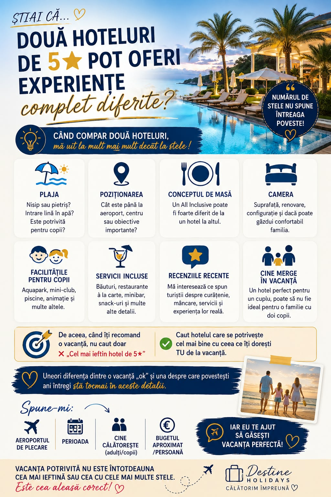
Un hotel extraordinar pentru un cuplu poate să nu fie cea mai bună alegere pentru o familie cu doi copii. Iar hotelul perfect pentru o familie poate să nu fie ce își dorește un cuplu care caută liniște.
„Cel mai ieftin hotel de 5★”
Hotelul care se potrivește cel mai bine cu ce îți dorești tu de la vacanță
Concluzia
Uneori diferența dintre o vacanță „ok” și una despre care povestești ani întregi stă tocmai în aceste detalii. Vacanța potrivită nu e întotdeauna cea mai ieftină sau cea cu cele mai multe stele. E cea aleasă corect.
Albania 🇦🇱 — apă turcoaz, situri UNESCO și altceva decât clasicul
Pentru cine caută mare spectaculoasă, peisaje frumoase, excursii și o atmosferă mediteraneană, dar vrea să încerce altceva decât destinațiile de fiecare vară.
Unde mergem pentru plajă?
💙 Ksamil
Cea mai cunoscută imagine a litoralului albanez: apă turcoaz, golfuri și insulițe foarte aproape de coastă. Superb, dar foarte aglomerat în plin sezon.
🌊 Sarandë
Una dintre principalele stațiuni din sud. Mare, restaurante, promenadă și excursii ușor de făcut în zonă.
🏝️ Himarë
Plaje frumoase și o atmosferă mai relaxată. În împrejurimi: Gjipe, Livadhi și Jale.
💎 Dhërmi
Apă superbă, peisaje spectaculoase și atmosferă mai animată. Bună pentru cupluri și tineri.
🌅 Vlorë
Locul unde Adriatica întâlnește Marea Ionică. O bază bună pentru a combina litoralul cu explorarea coastei.
Dar Albania nu înseamnă doar plajă
📍 Butrint
Unul dintre cele mai importante situri arheologice ale țării. Se combină ușor cu o vacanță în zona Sarandë–Ksamil.
UNESCO🏰 Gjirokastër
Oraș istoric cu arhitectură tradițională și o cetate impresionantă. Perfect dacă nu vrei 7 zile pe șezlong.
UNESCO🏘️ Berat
„Orașul celor o mie de ferestre”, una dintre imaginile emblematice ale Albaniei.
UNESCO💦 Blue Eye (Syri i Kaltër)
Izvor natural renumit pentru culoarea intensă a apei. O excursie foarte frumoasă din sud.
⛰️ Alpii Albanezi
Theth și Valbona, pentru iubitorii de natură și drumeții. Pot transforma vacanța într-un circuit.
Ce mâncăm?
O bucătărie cu influențe mediteraneene și balcanice: pește și fructe de mare pe coastă, carne, legume, brânzeturi și preparate tradiționale precum byrek (plăcintă cu foi) sau tavë kosi (miel la cuptor cu iaurt și ouă).
Cui i se potrivește Albania?
- Familiilor care vor mare și plajă, dacă zona și hotelul sunt alese atent
- Cuplurilor care vor plaje, plimbări și restaurante
- Turiștilor activi care închiriază mașină și vor să descopere mai multe locuri
- Celor care s-au săturat de aceleași destinații în fiecare vară
- Celor care vor să combine marea cu excursii și obiective turistice
Pe scurt
Dacă îți dorești apă turcoaz, plaje spectaculoase și o vacanță în care într-o zi stai la mare, iar în următoarea descoperi un sit antic, un izvor spectaculos sau un oraș UNESCO, hai să ne uităm și la Albania.
🏖️ Cauți hotel direct la mare? Vezi top 10 hoteluri cu plajă privată în Albania.
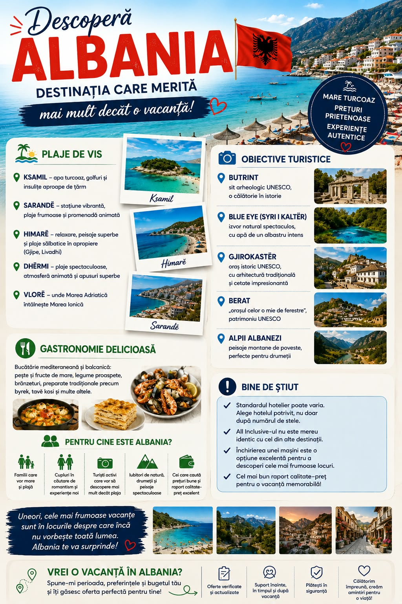
Vara nu se termină în septembrie
Vreme excelentă, prețuri mai bune decât în plin sezon și mai multă disponibilitate la hotelurile de top. Cinci destinații în care marea e încă vară.
🇹🇷 Turcia
Hoteluri de top și plaje spectaculoase.
- ✔ All Inclusive
- ✔ Resorturi cu aquapark
- ✔ Familii și cupluri
🇨🇾 Cipru
Apă cristalină și ospitalitate mediteraneană.
- ✔ Zbor direct
- ✔ Hoteluri pe plajă
- ✔ Relaxare și distracție
🇬🇷 Rodos
Atmosferă grecească și apă turcoaz.
- ✔ Zbor direct
- ✔ Hoteluri pentru toate bugetele
- ✔ Plaje premiate
🇬🇷 Creta
Insula zeilor, plaje exotice și peisaje uimitoare.
- ✔ Zbor direct
- ✔ Hoteluri cu vedere la mare
- ✔ Cultură și gastronomie
🇪🇬 Egipt
Soare din plin și All Inclusive la prețuri bune.
- ✔ All Inclusive
- ✔ Hoteluri cu recif
- ✔ Distracție pentru toată familia
Ai concediu în septembrie? Cu perechea, cu copiii sau cu prietenii, spune-mi bugetul și aeroportul de plecare, iar eu îți caut vacanța potrivită. Zboruri directe din București și din toate regiunile, consultanță personalizată și asistență pe toată durata vacanței.
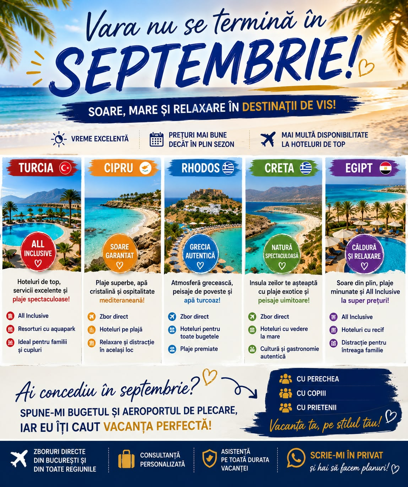
Când e cel mai bine să mergi în destinațiile exotice?
Maldive în august? Zanzibar în aprilie? Thailanda în septembrie? O vacanță exotică nu înseamnă doar unde mergi, ci și când. Alege luna și vezi ce colț de paradis i se potrivește.
🌊 Maldive
Lagune incredibil de albastre
🌴 Mauritius & Seychelles
Natură și plaje spectaculoase
🐘 Thailanda & Sri Lanka
Exotism, cultură și aventură
🦁 Zanzibar & Kenya
Plajă și safari în aceeași vacanță
🥥 Bali
Temple, junglă și plaje
🌺 Caraibe & Mexic
Vacanța pe care o vezi în filme
✨ Dubai & Oman
Soare și răsfăț când în Europa e frig
💡 Salvează pagina. Îți va fi de folos când începi să te gândești la următoarea vacanță.
Nu știi ce destinație să alegi? Spune-mi în ce lună vrei să pleci, cu cine călătorești și ce buget ai, iar eu îți recomand variantele potrivite.
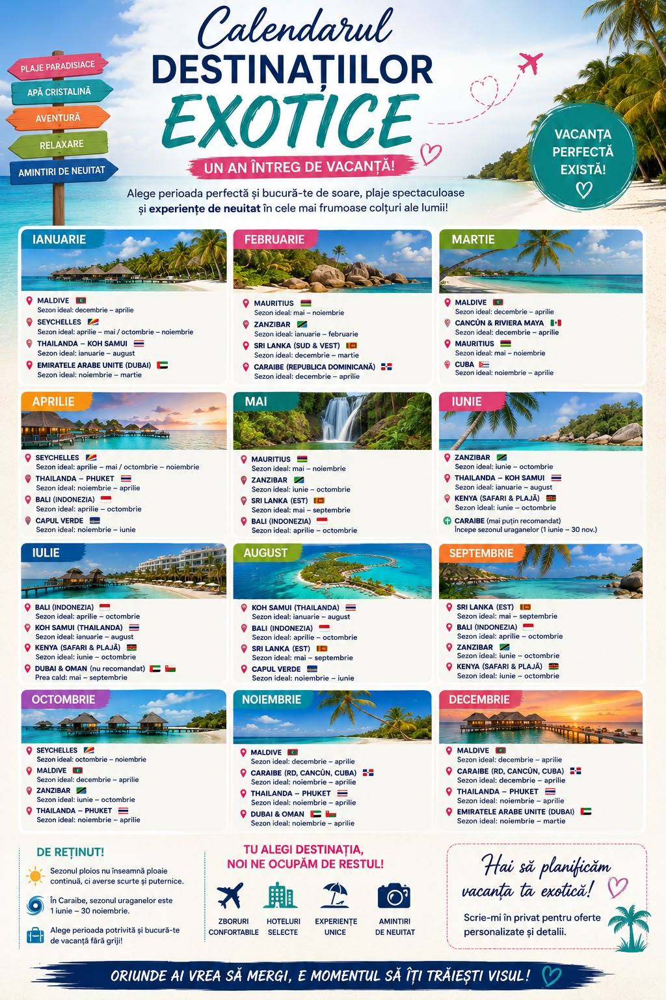
📚 La Nisipurile de Aur, vacanța are acum și o bibliotecă în română
Plajă, relaxare, mâncare bună și o carte captivantă. IRI Travel a amenajat biblioteci în limba română în hotelurile GRIFID, ca oaspeții să citească ce le place chiar în timpul sejurului.
Peste 500 de cărți, pentru toate gusturile
Unde le găsești
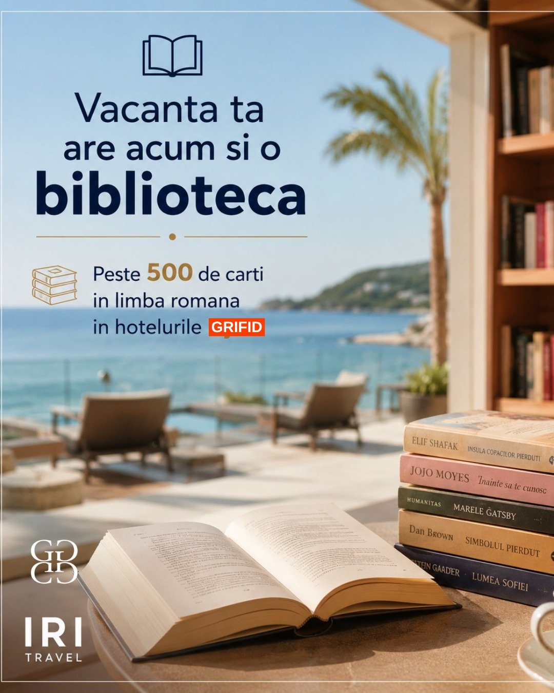
Vacanță completă
Mare, soare și lecturi de neuitat, la 8 hoteluri din Nisipurile de Aur. Bulgaria, la câteva ore de mers cu mașina din București.
Vacanța în rate: pleci acum, plătești treptat
Plata în rate prin TBI Bank nu e despre un credit, ci despre o soluție prin care îți permiți vacanța dorită fără să-ți dezechilibrezi bugetul lunar. Iată de ce o aleg tot mai mulți turiști.
Nu mai amâni vacanța
„Mai strâng bani și merg anul viitor.” De ce să amâni amintirile cu familia, când poți pleca acum și plăti treptat?
O sumă lunară ușor de inclus în buget
8.000 lei par mult dintr-odată. Aproximativ 670 lei pe lună se potrivesc mai ușor în bugetul familiei.
Îți blochezi prețul și locul
Dacă aștepți, prețurile pot crește, locurile bune se ocupă și zborurile se scumpesc.
Îți păstrezi economiile
Nu consumi toți banii puși deoparte. Rămâi cu o rezervă pentru situații neprevăzute.
Mai mult confort
Poți alege un hotel mai bun, All Inclusive, o cameră superioară sau destinația pe care ți-o dorești cu adevărat.
Investești în experiențe
Lucrurile cumpărate se uită repede. Amintirile din vacanță rămân ani întregi.
Fără presiunea economisirii
Nu e ușor să pui bani deoparte disciplinat. Ratele îți dau un plan clar de plată.
Prinzi reducerile Early Booking
Rezervi acum, păstrezi reducerea și întinzi plata pe mai multe luni.
Mai multe vacanțe, nu doar una
Concediul de vară, city break-ul de toamnă și vacanța de iarnă, fără să scoți toți banii odată.
Proces simplu și rapid
În câteva minute verificăm eligibilitatea, iar dacă finanțarea e aprobată, rezervăm vacanța imediat.
Pe scurt
O vacanță e o investiție în timpul petrecut cu familia și în starea ta de bine. Ratele fac doar ca ea să înceapă mai devreme.
* Exemplu strict orientativ, care împarte prețul pachetului la numărul de luni și nu include eventualele costuri ale finanțării. Rata lunară efectivă, dobânda, DAE și valoarea totală plătibilă depind de oferta TBI Bank în vigoare și de aprobarea finanțării, și îți sunt comunicate înainte de semnare. Finanțarea este oferită de TBI Bank, sub rezerva analizei de eligibilitate.
🍹 All Inclusive vs. Ultra All Inclusive: care e diferența?
„Dacă am All Inclusive, nu înseamnă că am totul inclus?” Nu neapărat. Și aici apare una dintre cele mai frecvente confuzii atunci când alegem o vacanță.
🍽️ All Inclusive
- Mese principaleMic dejun, prânz și cină în restaurantul principal.
- GustăriÎn anumite intervale orare, în locațiile stabilite de hotel.
- Băuturi răcoritoareApă, sucuri, ceai, cafea filtrată, la mese și la baruri, în program.
- Băuturi alcoolice localeBere, vin, băuturi spirtoase locale, în programul stabilit.
- Activități și facilitățiPiscine, plajă, șezlonguri, animație și unele sporturi nemotorizate.
👑 Ultra All Inclusive
- Program extinsMâncare și băuturi de la micul dejun timpuriu până la gustările târzii.
- Mai multe gustăriSnack-uri, înghețată, cafea, clătite pe parcursul zilei.
- Băuturi de import și premiumDe regulă, băuturi internaționale, cocktailuri, cafea la bar, fresh-uri.
- Minibar inclusRăcoritoare, bere, apă, realimentat zilnic.
- Restaurante à la carteRestaurante tematice, de obicei cu rezervare prealabilă.
- Servicii suplimentareRoom service, spălătorie, prosoape de plajă în cameră, early check-in / late check-out, după disponibilitate.
Toate elementele din coloana Ultra depind de hotel: unele le includ pe toate, altele doar o parte.
Atenție: conceptul diferă de la hotel la hotel
„Ultra All Inclusive” nu înseamnă automat că absolut totul e gratuit. Două hoteluri care folosesc exact aceeași denumire pot avea concepte foarte diferite. Citește descrierea conceptului de masă sau cere detalii înainte de rezervare.
Când compar două oferte, verific ce include efectiv conceptul de masă al fiecărui hotel. Nu mă opresc la denumirea „All Inclusive” sau „Ultra All Inclusive”.
Uneori, un hotel foarte bun cu All Inclusive oferă o experiență mai bună decât un alt hotel care își numește conceptul Ultra All Inclusive.
Pe scurt
Nu cumpăra doar denumirea. Compară ceea ce primești pentru banii tăi.
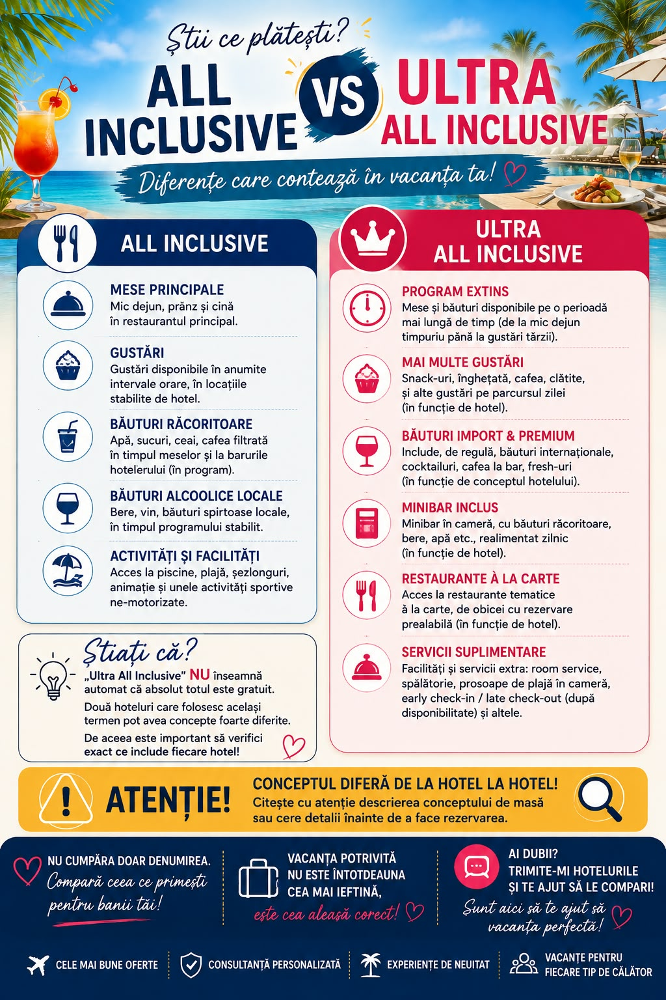
BB, HB, HB+, FB, FB+: ce înseamnă toate aceste prescurtări?
Le vezi în fiecare ofertă, dar ce primești de fapt la masă? Și ce băuturi plătești separat? De la micul dejun simplu până la Ultra All Inclusive, iată scara conceptelor de masă.
BB
Bed & Breakfast · mic dejunInclude
- Cazare + mic dejun tip bufet
Ideal pentru
Cei care vor să descopere destinația și să ia masa în afara hotelului.
HB
Half Board · demipensiuneInclude
- Mic dejun tip bufet
- O masă principală, de regulă cina (unele hoteluri oferă mic dejun + prânz)
- Băuturile la mese nu sunt incluse, de regulă
Ideal pentru
Cei care vor confort, dar și flexibilitatea de a lua prânzul sau cina în oraș.
HB+
Half Board Plus · demipensiune plusInclude
- Mic dejun tip bufet
- O masă principală, de regulă cina
- Băuturi incluse la masa principală: apă, răcoritoare, vin, bere (conform conceptului hotelului)
Ideal pentru
Cei care își doresc confort și băuturi incluse la cină.
FB
Full Board · pensiune completăInclude
- Mic dejun tip bufet
- Prânz tip bufet sau meniu fix
- Cină tip bufet sau meniu fix
- Băuturile la mese nu sunt incluse, de regulă
Ideal pentru
Familii și călători care vor toate mesele incluse, fără băuturi.
FB+
Full Board Plus · pensiune completă plusInclude
- Mic dejun, prânz și cină
- Băuturi incluse la toate mesele: apă, răcoritoare, vin, bere (conform conceptului hotelului)
Ideal pentru
Cei care vor toate mesele și băuturile incluse, pentru o vacanță fără griji.
Important
Ce include HB, HB+, FB și FB+ poate diferi de la un hotel la altul. Verifică întotdeauna conceptul de masă înainte de rezervare.
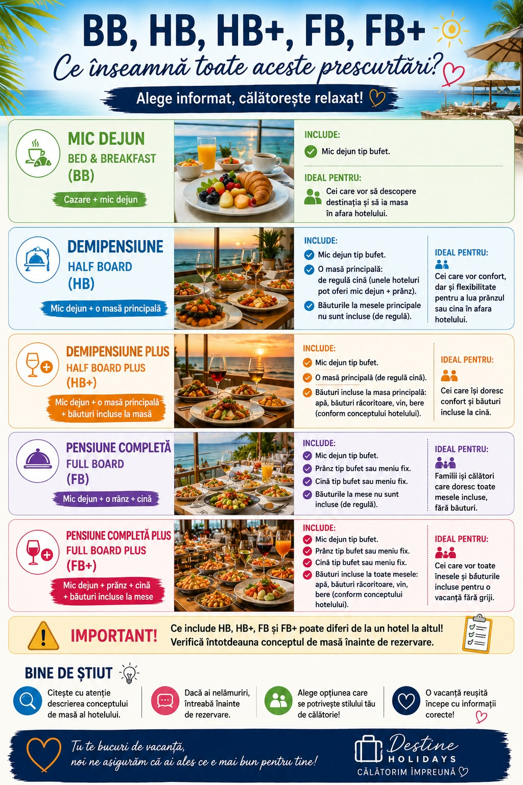
Tipuri de cameră: ce înseamnă și care ți se potrivește?
Standard, Superior, Deluxe, Family sau Suită? Câți metri pătrați primești? Vezi marea sau parcarea? Fiecare hotel folosește denumiri ușor diferite, dar acestea sunt cele mai întâlnite tipuri de cameră.
Standard
Cameră standardCe este
Camera de bază a hotelului: suprafață mai mică, facilități esențiale.
Capacitate
2 adulți
Suprafață
de la 18–25 m²
Vedere
Curte interioară, stradă sau lateral
Superior
Cameră superioarăCe este
Mai spațioasă decât standard, cu un plus de confort și, adesea, o vedere mai bună.
Capacitate
2–3 persoane
Suprafață
de la 22–30 m²
Vedere
Piscină, grădină sau parțial spre mare
Deluxe
Cameră deluxeCe este
Confort sporit, design modern, spațiu generos, dotări premium.
Capacitate
2–3 persoane
Suprafață
de la 28–35 m²
Vedere
De obicei, spre mare
Family Room
Cameră de familieCe este
Concepută pentru familii: o cameră spațioasă sau două camere separate cu ușă interioară.
Capacitate
2 adulți + 1–2 copii
Suprafață
de la 30–45 m²
Configurație
1 dormitor sau 2 dormitoare cu ușă interioară
Suită
SuiteCe este
Cea mai spațioasă și elegantă opțiune, de obicei cu dormitor și living separat.
Capacitate
2–4 persoane
Suprafață
de la 40 m² în sus
Avantaje
Spațiu generos, confort de lux, servicii și beneficii extra
- Dimensiunea camerei variază de la un hotel la altul.
- Vederea camerei influențează prețul.
- Pentru familii, alege camera după numărul de persoane și confortul dorit.
- Cere detalii despre cameră înainte de rezervare.
- Verifică pozele reale și recenziile recente ale turiștilor.
- Asigură-te că se potrivește nevoilor și bugetului tău.
Pe scurt
O cameră potrivită înseamnă o vacanță reușită. Spune-mi ce îți dorești de la vacanță și alegem împreună camera potrivită.
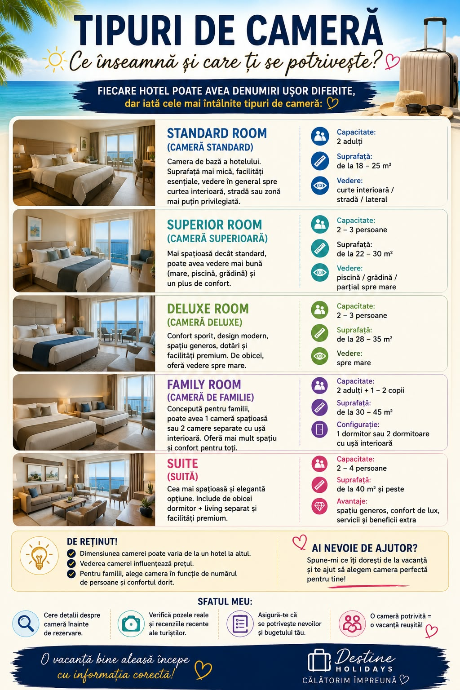
Circuit, croazieră, charter sau doar cazare: care e diferența?
Vrei să vezi 5 orașe într-o săptămână? Vrei să te trezești în fiecare dimineață în alt port? Sau vrei doar zborul direct, hotelul și transferul, fără bătăi de cap? Alege tipul de vacanță potrivit pentru tine.
Circuit
TourCe este
Descoperi mai multe locuri într-o singură vacanță, după un itinerar bine stabilit.
Avantaje
- Mai multe orașe și obiective în aceeași călătorie
- Transport inclus: autocar, avion sau tren
- Ghid însoțitor
- Program organizat
De obicei include
- Cazare
- Mic dejun sau pensiune completă, în funcție de program
- Vizite și excursii conform programului
Ideal pentru
Cei care vor să descopere locuri noi și să aibă parte de experiențe culturale și organizare completă.
Croazieră
CruiseCe este
O vacanță pe mare, în care te bucuri de confortul unui hotel care călătorește cu tine.
Avantaje
- Nave moderne și confortabile
- Vizite în mai multe porturi
- Mese și divertisment la bord
- Peisaje spectaculoase
De obicei include
- Cazare în cabină
- Pensiune completă la bord
- Divertisment și activități la bord
- Porturile și taxele portuare
Ideal pentru
Cei care vor relaxare, confort și experiențe variate, fără să își facă griji pentru logistică.
Pachet charter
Zbor + cazare + transferCe este
Zbor special (charter) către destinații de vacanță, la pachet cu cazare și transferuri.
Avantaje
- Zbor direct către destinație
- Prețuri atractive
- Transfer aeroport–hotel–aeroport inclus
- Operator turistic responsabil de pachet
De obicei include
- Zbor charter dus-întors
- Cazare
- Transferuri
- Asistență turistică
Ideal pentru
Cei care vor o vacanță complet organizată, fără bătăi de cap, la un preț bun.
Doar cazare
HotelCe este
Rezervi doar cazarea, iar de restul te ocupi tu: transport, masă, activități.
Avantaje
- Flexibilitate totală
- Alegi zborul, transportul și masa cum dorești
- Ideal pentru city break sau vacanțe personalizate
De obicei include
- Doar cazarea, cu tipul de masă ales
Ideal pentru
Cei care preferă libertatea de a-și organiza vacanța exact cum vor.
Important
Conținutul pachetelor variază în funcție de operator și destinație. Citește întotdeauna detaliile ofertei înainte de rezervare.
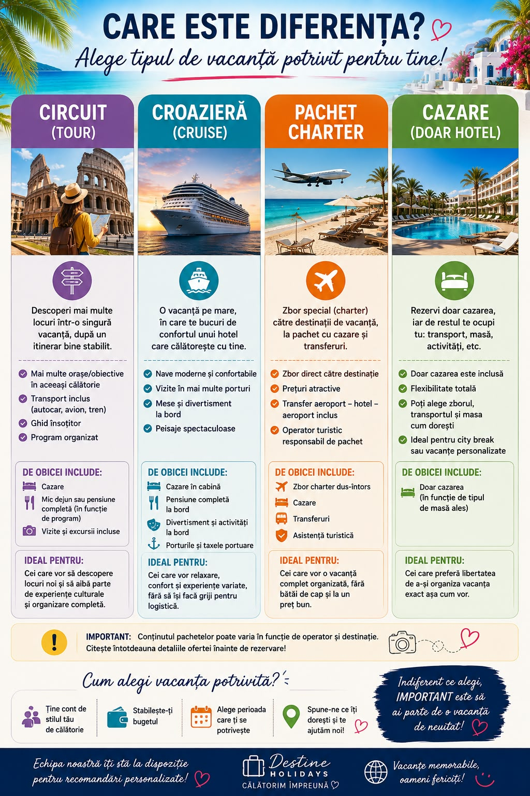
Antalya, Side, Belek sau Alanya: ce stațiune ți se potrivește?
Vrei oraș și shopping? Vrei ruine antice la 5 minute de plajă? Vrei golf și resorturi de 5★? Sau vrei viață de noapte și peisaje cu munți? Patru stațiuni pe Riviera Turcească, patru experiențe diferite.
Antalya
Oraș și viață vibrantăDespre stațiune
Combinația dintre oraș și vacanță. Aeroportul e foarte aproape, iar opțiunile de cazare sunt foarte variate.
Plajă
Plaje publice cu pietriș sau nisip, aproape de oraș. Unele hoteluri au plajă privată cu shuttle.
Hoteluri
De la hoteluri de oraș la resorturi mari, cu toate facilitățile.
Ideal pentru
Cei care vor să îmbine marea cu shopping, restaurante, viață de noapte și obiective turistice.
Transfer de la aeroport
10–30 min
Side
Istorie și relaxareDespre stațiune
Locul unde istoria întâlnește marea: ruine antice, străduțe cochete și o atmosferă relaxată.
Plajă
Nisip fin, intrare lină în mare. Multe hoteluri au plajă privată excelentă.
Hoteluri
Majoritatea sunt resorturi mari, perfecte pentru familii, cu servicii All Inclusive.
Ideal pentru
Familii cu copii, cupluri și cei care vor relaxare, plaje frumoase și puțină istorie.
Transfer de la aeroport
50–70 min
Belek
Lux și naturăDespre stațiune
Destinația premium a Rivierei Turcești: lux, natură, golf și resorturi exclusiviste.
Plajă
Nisip fin, plaje late și îngrijite, apă cristalină. Resorturile au plajă privată.
Hoteluri
Resorturi de 5★, foarte luxoase, cu facilități de top și servicii impecabile.
Ideal pentru
Cei care caută lux, confort maxim, golf, wellness și servicii premium.
Transfer de la aeroport
25–40 min
Alanya
Distracție și peisajeDespre stațiune
Animată, plină de viață, cu peisaje spectaculoase: munte și mare în același loc.
Plajă
Nisip și pietriș, ape clare, multe plaje cu Steag Albastru. Hoteluri pe plajă și pe stâncă.
Hoteluri
Pentru toate bugetele, de la hoteluri bune la resorturi mari.
Ideal pentru
Tineri, grupuri de prieteni și cei care vor distracție, excursii și viață de noapte.
Transfer de la aeroport
110–130 min (din Antalya)
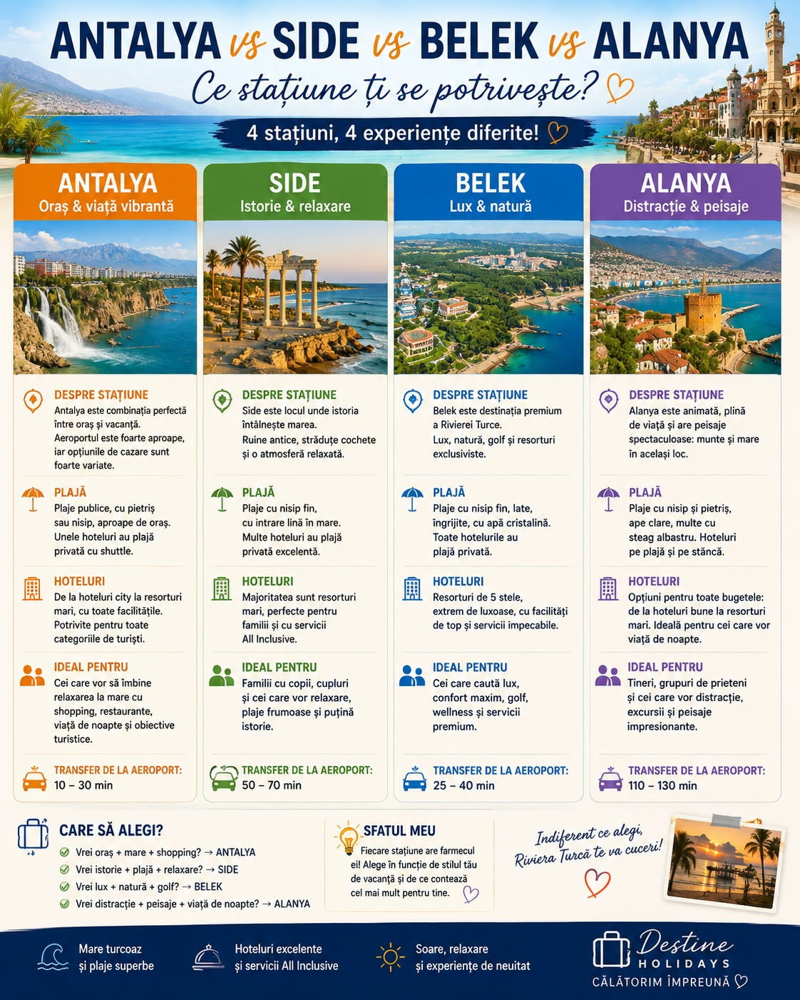
Hurghada, Sharm el-Sheikh sau Marsa Alam?
Vrei sporturi nautice și viață de noapte? Vrei recif de corali la câțiva metri de țărm? Sau vrei liniște și delfini în larg? Trei destinații de vis la Marea Roșie, trei experiențe diferite.
Hurghada
Distracție și accesibilitateDespre destinație
Cea mai cunoscută stațiune de pe coasta Mării Roșii. Atmosferă animată, potrivită pentru orice tip de turist.
Plajă și mare
- Nisip fin, intrare lină în mare
- Apă caldă, ideală pentru copii
- Plaje publice și plaje private la hoteluri
Ce poți face
- Sporturi nautice: kitesurf, windsurf, jet ski, parasailing
- Excursii: Luxor, Cairo, Insula Utopia, Orange Bay
- Viață de noapte și shopping în Hurghada Marina
Pentru cine e ideală
- Familii cu copii
- Cupluri și grupuri de prieteni
- Cei care vor distracție și activități diverse
Transfer de la aeroport
10–25 min
Prețuri
€ · cele mai accesibile dintre cele trei
Sharm el-Sheikh
Natură și aventurăDespre destinație
La poalele munților Sinai: peisaje spectaculoase, recif de top și un mix între relaxare și aventură.
Plajă și mare
- Plaje superbe, apă cristalină
- Recif aproape de țărm în multe zone
- Perfect pentru snorkeling și scufundări
Ce poți face
- Scufundări și snorkeling în Parcul Național Ras Mohammed
- Excursii: Muntele Sinai și Mănăstirea Sf. Ecaterina, Dahab, Blue Hole
- Safari în deșert cu buggy, ATV sau cămilă
Pentru cine e ideală
- Cupluri și lună de miere
- Iubitori de natură și aventură
- Cei care vor experiențe subacvatice și în deșert
Transfer de la aeroport
15–30 min
Prețuri
€€ · medii spre ridicate, în funcție de zonă și sezon
Marsa Alam
Relaxare și natură sălbaticăDespre destinație
Mai liniștită și mai autentică. Pentru iubitorii de natură, recifuri virgine și relaxare totală în resorturi de top.
Plajă și mare
- Plaje cu nisip fin, neaglomerate
- Recifuri spectaculoase și variate
- Snorkeling direct de la mal în unele zone
Ce poți face
- Snorkeling și scufundări în recifuri puțin atinse
- Excursii: El Quseir, Wadi El Gemal, Sataya (delfini)
- Relaxare în resort, departe de agitație
Pentru cine e ideală
- Iubitori de liniște și natură
- Pasionați de snorkeling și scufundări
- Cei care vor relaxare totală în resorturi de lux
Transfer de la aeroport
45–90 min
Prețuri
€€ · medii, raport calitate-preț excelent, mai ales în afara vârfului de sezon
🛝 Pleci cu copiii? Vezi top hoteluri cu aquapark din Egipt.
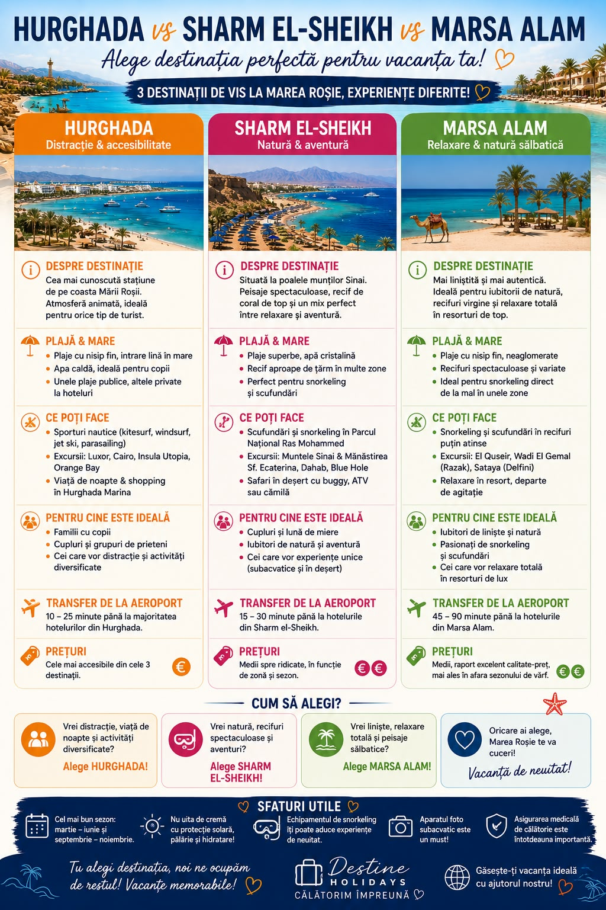
Creta, Rhodos, Zakynthos sau Corfu: ce insulă ți se potrivește?
Vrei plaje cu nisip roz și situri minoice? Vrei un oraș medieval al cavalerilor? Vrei apă turcoaz ca în pozele de pe Instagram? Sau vrei cea mai verde insulă a Greciei? Patru insule superbe, patru experiențe diferite.
Creta
Diversitate și istorieDespre insulă
Cea mai mare insulă grecească, plină de contraste: plaje superbe, munți, sate tradiționale, istorie și gastronomie.
Plaje
Nisip fin (Elafonissi, Vai), lagune (Balos), golfulețe ascunse și plaje lungi, organizate.
Ideal pentru
Familii, cupluri, aventurieri, iubitori de natură, istorie și gastronomie.
Atracții de top
- Palatul Knossos
- Laguna Balos
- Plaja Elafonissi
- Defileul Samaria
- Chania și Rethymnon
Transfer de la aeroport
- Heraklion – stațiunile principale: 1–2 h
- Chania – stațiunile principale: 30 min – 1 h 30
Perioada ideală
Mai–octombrie: sezon lung, climă blândă și în extrasezon
Prețuri
$$ · medii, pentru toate bugetele
Rhodos
Soare și culturăDespre insulă
Insula cavalerilor: plaje frumoase, monumente istorice și viață de noapte animată.
Plaje
Nisip sau pietriș, ape cristaline, multe plaje organizate și premiate (Tsambika, Faliraki).
Ideal pentru
Cupluri, familii, iubitori de istorie, petrecăreți și căutători de confort.
Atracții de top
- Orașul medieval Rhodos
- Lindos și Acropola
- Valea Fluturilor
- Plaja Tsambika
- Satul tradițional Embona
Transfer de la aeroport (RHO)
- Faliraki: 20–30 min
- Lindos: 45–60 min
- Rhodos Town: 20–30 min
Perioada ideală
Mai–octombrie; vârful sezonului: iulie–august
Prețuri
$$–$$$ · de la hoteluri accesibile la resorturi de lux
Zakynthos
Natură și peisaje spectaculoaseDespre insulă
Cunoscută pentru plajele spectaculoase, apa turcoaz și faimoasa plajă a Epavei (Navagio). Pentru iubitorii de natură.
Plaje
Unele dintre cele mai fotografiate plaje din lume: Navagio, Porto Limnionas, Gerakas, Laganas.
Ideal pentru
Tineri, cupluri, iubitori de natură și peisaje spectaculoase.
Atracții de top
- Plaja Navagio (Epava)
- Blue Caves
- Porto Limnionas
- Parcul Marin Zakynthos
- Excursii cu barca
Transfer de la aeroport (ZTH)
- Laganas: 10–20 min
- Tsilivi: 15–20 min
- Alykes: 20–30 min
Perioada ideală
Mai–septembrie; iunie și septembrie, ideale pentru liniște și prețuri bune
Prețuri
$$ · accesibile, cu opțiuni pentru toate bugetele
Corfu
Verde și autenticDespre insulă
Cea mai verde insulă a Greciei, cu influențe venețiene, peisaje pitorești, sate fermecătoare și plaje liniștite.
Plaje
Multe golfuri ascunse, ape limpezi: Paleokastritsa, Glyfada, Sidari, Barbati.
Ideal pentru
Cupluri, familii și cei care caută relaxare, autenticitate și peisaje verzi.
Atracții de top
- Paleokastritsa
- Cetatea veche din Corfu Town
- Palatul Achilleion
- Canal d'Amour
- Sate tradiționale (Lakones)
Transfer de la aeroport (CFU)
- Corfu Town: 15–20 min
- Paleokastritsa: 25–35 min
- Kavos: 45–60 min
Perioada ideală
Mai–septembrie; mai, iunie și septembrie pentru temperaturi plăcute
Prețuri
$$–$$$ · medii spre ridicate în zonele populare
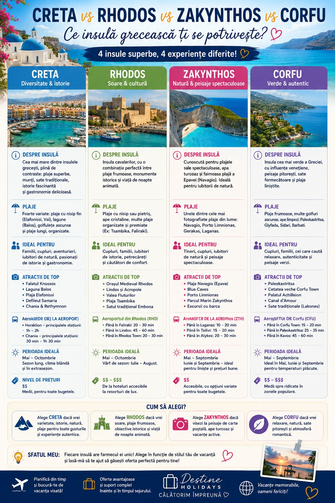
Top 10 hoteluri cu plajă privată în Nisipurile de Aur
Vrei Bulgaria, dar unul dintre criteriile tale principale e să ai plajă amenajată, cât mai aproape de hotel? Pleci cu copiii și nu vrei să cari umbrela și gențile 15 minute până la mare? Sau vrei liniște, doar în doi, într-un hotel Adults Only? Iată 10 hoteluri pe care merită să le iei în calcul.
SENTIDO Marea★★★★
Plajă privată, 3 piscine, animație pentru copii, mâncare variată și băuturi premium.
🏖️ Plajă privată cu șezlonguri și umbrele incluseGRIFID Encanto Beach★★★★
Design modern, plajă privată, piscine, SPA și gastronomie de top.
🏖️ Plajă privată amenajată la doar câțiva pașiGRIFID Vistamar★★★★
Plajă privată, piscine pentru copii și adulți, sport și divertisment zi și noapte.
🏖️ Șezlonguri și umbrele incluse pe plaja privatăGRIFID Noa★★★★★
Concept modern, facilități premium, SPA, plajă privată și servicii Signature.
🏖️ Servicii premium pe plaja privatăGRIFID Metropol★★★★
Atmosferă elegantă, vedere superbă la mare, plajă privată, cocktail bar pe plajă.
🏖️ Zonă de plajă privată pentru relaxare totalăMeliá Grand Hermitage★★★★★
Resort mare, grădini spectaculoase, plajă privată, mini club, activități și divertisment.
🏖️ Plajă privată cu bar și servicii All InclusiveHVD Riviera Beach★★★★★
În complexul Riviera Holiday Club, pe malul mării: plajă privată, SPA și zone de relaxare.
🏖️ Plajă privată liniștită, într-un cadru naturalHVD Nympha★★★★
Pe malul mării, plajă privată, atmosferă relaxantă, piscină infinity și confort premium.
🏖️ Plajă privată exclusivă pentru oaspeții hoteluluiGRIFID Club Hotel Bolero★★★★
Aquapark, club pentru copii, sporturi și plajă privată cu șezlonguri incluse.
🏖️ Plajă privată potrivită pentru întreaga familiePalm Beach★★★★
Foarte aproape de mare, plajă privată cu șezlonguri și umbrele incluse, atmosferă relaxantă.
🏖️ Acces direct la plaja privată, fără costuri extra
De ce contează accesul la o plajă rezervată oaspeților?
Atenție
Serviciile oferite pe plajă diferă de la hotel la hotel și se pot modifica de la un sezon la altul. La rezervare verificăm exact ce e inclus în pachetul ales, inclusiv diferența dintre All Inclusive și Ultra All Inclusive.
Pe scurt
Nu există un singur „cel mai bun hotel”. Există hotelul potrivit pentru familia, bugetul și stilul tău de vacanță. Spune-mi perioada, numărul de adulți și vârsta copiilor, regimul de masă dorit și bugetul aproximativ, iar eu îți caut variantele potrivite.
📞 Sună-mă: 0759 012 119✉️ Solicită oferta
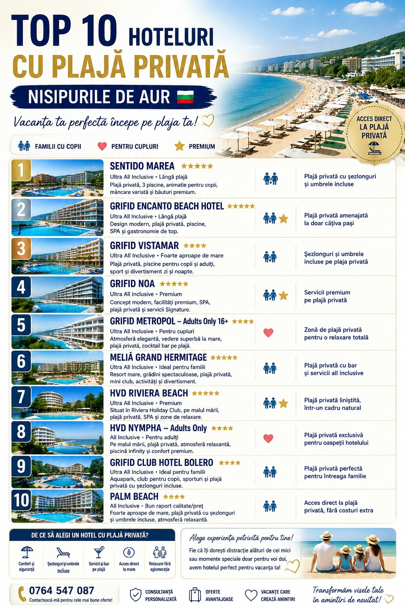
Top hoteluri cu plajă privată în Sunny Beach
Pleci cu familia și nu vrei să pierzi o jumătate de oră în fiecare dimineață până găsești loc pe plajă? Vrei șezlongul și umbrela incluse? Vrei aquapark pentru copii și liniște pentru tine? Un hotel bun contează, dar un hotel cu acces rapid la o plajă amenajată pentru oaspeți face vacanța și mai comodă.
Criteriile selecției
Barceló Royal Beach★★★★★
Arhitectură deosebită, restaurante variate, centru SPA și servicii de top.
🏖️ Plajă privată amenajată, servicii și bar pe plajăMajestic Beach Resort★★★★★
Resort impresionant, camere spațioase, grădini superbe și facilități pentru toate vârstele.
🏖️ Plajă privată lată, șezlonguri și umbrele incluseDIT Majestic Beach Resort★★★★
Locație excelentă, servicii de calitate, piscine și animație pentru întreaga familie.
🏖️ Acces direct la plaja privată, cu șezlonguri și umbrele incluseViking Star Beach Resort★★★★★
Design modern, camere confortabile, parc acvatic și centre de relaxare.
🏖️ Plajă privată cu bar, șezlonguri și umbrele inclusePirin Beach Hotel★★★★
Hotel îndrăgit de familii, animație pentru copii, piscină mare și facilități multiple.
🏖️ Plajă privată amenajată, șezlonguri și umbrele incluseHVD Club Bor★★★★
Atmosferă prietenoasă, camere confortabile, activități pentru copii și adulți.
🏖️ Plajă privată cu acces direct, șezlonguri și umbrele incluseSol Nessebar Palace★★★★★
Resort elegant, grădini frumoase, centre SPA, activități și divertisment de calitate.
🏖️ Plajă privată cu servicii premium și bar pe plajăNeptun Beach Hotel★★★★
Hotel cu tradiție, poziție excelentă, piscină, sport și divertisment.
🏖️ Plajă privată cu șezlonguri și umbrele incluse
Important
Conceptul de plajă și serviciile incluse pot diferi de la un hotel la altul și de la un sezon la altul. Înainte de rezervare verificăm exact ce e inclus în oferta aleasă.
Pentru o ofertă personalizată, trimite-mi
📅 perioada dorită · 👨👩👧👦 numărul de adulți și vârsta copiilor · 🍽️ tipul de masă dorit · 💶 bugetul aproximativ
📞 Sună-mă: 0759 012 119✉️ Solicită oferta
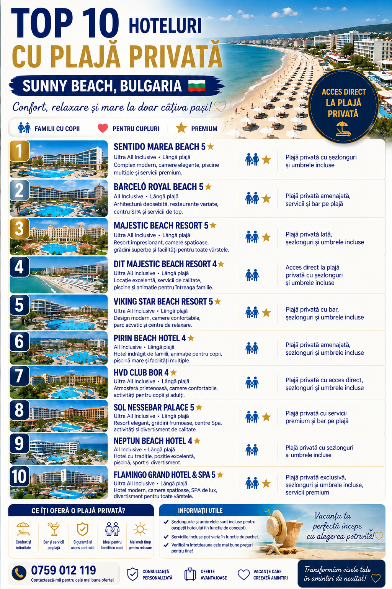
Top 5 hoteluri cu zonă de plajă dedicată în Albena
Ieși din hotel și ești la câțiva pași de mare? Copiii se joacă pe nisip fin, într-o apă cu intrare lină? Șezlongul și umbrela te așteaptă fără să plătești în plus? Dacă așa arată vacanța ta perfectă, Albena merită să fie pe listă, mai ales dacă pleci cu familia.
Maritim Hotel Paradise Blue Albena★★★★★
Alegerea premium: camere elegante, piscine multiple, aquapark și servicii de top.
🏖️ Sector de plajă dedicat, șezlonguri și umbrele incluse (conform pachetului și disponibilității)Hotel Gergana★★★★
Multă verdeață, liniște, servicii excelente și atmosferă relaxantă.
🏖️ Sector de plajă dedicat: 1 umbrelă și 2 șezlonguri pe cameră, începând cu rândul 3, în limita disponibilitățiiKaliakra Beach★★★★
Hotel îndrăgit de familii, cu animație, piscine și multe activități.
🏖️ Plajă amenajată pentru oaspeți, șezlonguri și umbrele incluse (conform pachetului și disponibilității)Boryana★★★★
Hotel confortabil, servicii bune și poziție excelentă.
🏖️ Zonă de plajă dedicată, șezlonguri și umbrele incluse (conform pachetului și disponibilității)Arabella Beach★★★★
Aproape de centru, camere confortabile și atmosferă plăcută.
🏖️ Sector de plajă dedicat, șezlonguri și umbrele incluse (conform pachetului și disponibilității)
De ce îmi place Albena pentru familii?
Important
Condițiile de folosire a plajei, rândurile disponibile și numărul de șezlonguri incluse diferă în funcție de hotel și pachet. Le verificăm înainte de rezervare.
Care dintre cele 5 se potrivește familiei tale?
Trimite-mi perioada, numărul de adulți și vârsta copiilor, masa dorită și bugetul aproximativ, iar eu îți caut oferta potrivită. Tu alegi când vrei să pleci. De restul ne ocupăm împreună.
📞 Sună-mă: 0759 012 119✉️ Solicită oferta
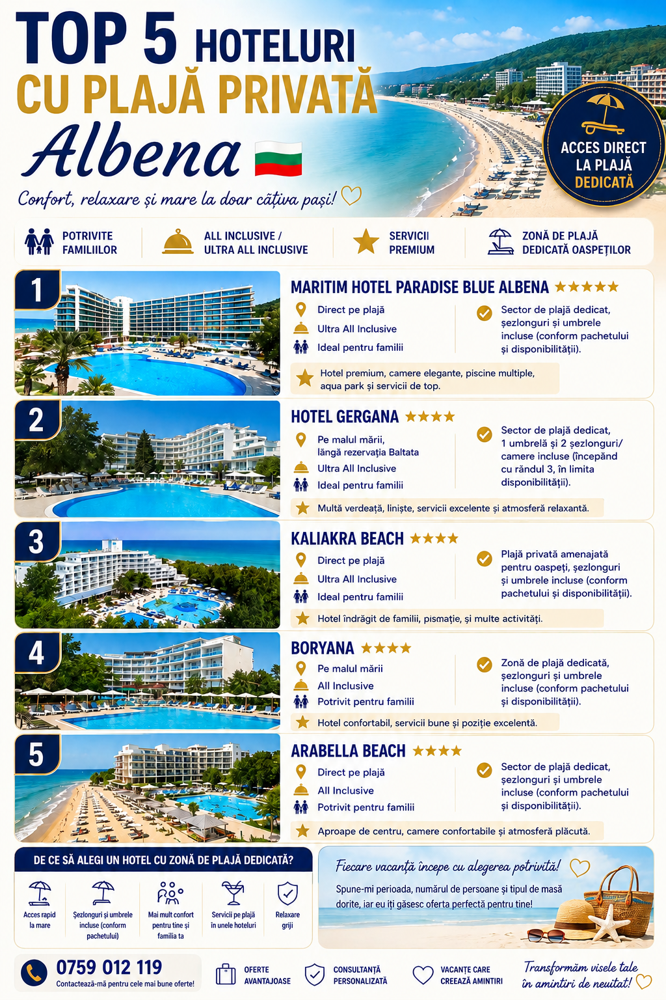
Top 10 hoteluri cu plajă privată în Albania
Apă turcoaz la mai puțin de o zi de mers cu mașina din România? Plajă privată fără prețurile din Grecia? Hotel direct la mare, în Durrës, Vlorë sau Ksamil? Albania e marea pe care nu te aștepți s-o găsești atât de aproape. Iată 10 hoteluri cu plajă privată sau sector dedicat oaspeților, de pe tot litoralul albanez.
Unde sunt, pe scurt
📍 Durrës și Gjiri i Lalëzit
Pentru familii și resorturi cu multe facilități.
📍 Golem
Foarte căutat pentru vacanțele cu copii.
📍 Vlorë și Radhimë
Mare superbă și peisaje spectaculoase.
📍 Sarandë și Ksamil
Apa turcoaz care a făcut Albania celebră.
📍 Dhërmi
Riviera Albaneză, peisaje superbe și atmosferă aparte.
Meliá Durrës Albania★★★★★
Resort modern, plajă privată, servicii premium.
🏖️ Plajă privată cu șezlonguri și umbrele · ideal pentru familiiAdriatik Hotel, BW Premier Collection★★★★★
Plajă privată generoasă, piscine, servicii excelente.
🏖️ Plajă privată · potrivit pentru familiiMaritim Marina Bay Resort Spa & Casino★★★★★
Plajă privată, infinity pool, priveliște superbă asupra golfului.
🏖️ Plajă privată · atmosferă premiumArameras Resort★★★★
Resort cu plajă privată, la câteva minute de insulele Ksamil și de Butrint.
🏖️ Plajă privată · apă turcoazSandy Beach Resort★★★★
Hotel modern, direct la mare, cu plajă privată.
🏖️ Plajă privată · piscine · ideal pentru familiiAmelia Mare Hotel★★★★
Plajă privată, nisip fin, facilități pentru copii.
🏖️ Plajă privată · piscină · potrivit pentru familiiElite Bay Hotel Lalez Durrës★★★★
Zonă privată de plajă, liniște și confort.
🏖️ Plajă privată · atmosferă relaxantă · ideal pentru cupluriSanta Quaranta Premium Resort★★★★★
Plajă privată și peisaje spectaculoase.
🏖️ Plajă privată · priveliște superbă · potrivit pentru cupluriEmpire Beach Resort★★★★★
Resort pe Riviera Albaneză, cu plajă privată și atmosferă exclusivistă.
🏖️ Plajă privată · Riviera AlbanezăMorina Beach Hotel★★★★
Plajă privată, mare și relaxare.
🏖️ Plajă privată · liniște și confort · ideal pentru familii
Un sfat important
Nu alege hotelul doar după fotografii sau numărul de stele. În Albania pot exista diferențe mari între zone și hoteluri, iar serviciile oferite pe plajă diferă în funcție de proprietate și pachet. Mai multe despre asta în ghidul Albaniei.
Vrei o ofertă pentru Albania 2027?
Trimite-mi perioada dorită, numărul de persoane și vârsta copiilor, regimul de masă dorit și bugetul aproximativ, iar eu îți caut variantele potrivite.
📞 Sună-mă: 0759 012 119✉️ Solicită oferta
Top hoteluri cu aquapark din Egipt
„Vreau un hotel în Egipt unde copiii să nu se plictisească!” Cel mic întreabă de 20 de ori pe zi „mai mergem o dată pe tobogan?” Tu vrei măcar o oră liniștită pe șezlong? Și te întrebi dacă piscina e încălzită în februarie? Iată o selecție de resorturi din Hurghada, Makadi Bay și Sharm el-Sheikh în care copiii se distrează, iar părinții apucă să se relaxeze.
Pickalbatros Jungle Aqua Park Neverland★★★★
Aquapark imens, cu peste 30 de tobogane, tematizat pentru copii; piscine multiple și activități.
🏖️ Ideal pentru familiiJAZ Aquaviva★★★★★
Aquapark cu tobogane pentru toate vârstele, camere spațioase pentru familii, All Inclusive de calitate.
🏖️ Plajă privată cu nisip finJAZ Aquamarine★★★★★
Mare varietate de tobogane, activități și animație zilnică.
🏖️ Potrivit pentru familii cu copii · plajă foarte frumoasăRixos Premium Seagate★★★★★
Aquapark impresionant, multiple piscine încălzite, activități pentru toate vârstele.
🏖️ Servicii premium All InclusivePickalbatros Aqua Blu Sharm★★★★★
Aquapark cu tobogane pentru toate vârstele, distracție garantată pentru copii, All Inclusive variat.
🏖️ Acces la plajă privatăSteigenberger Aqua Magic★★★★★
Aquapark cu tobogane multiple, atmosferă de poveste, club pentru copii.
🏖️ Plajă privată și piscineAlbatros Aqua Park Resort★★★★
Unul dintre cele mai mari aquaparkuri din Hurghada, cu tobogane variate și sigure; All Inclusive complet.
🏖️ Ideal pentru familiiSunrise Royal Makadi Resort★★★★★
Aquapark mare și modern, Kids Club și activități, servicii excelente.
🏖️ Plajă cu nisip și lagunăTitanic Beach Spa & Aqua Park★★★★
Aquapark cu multe tobogane, piscine pentru toate vârstele, All Inclusive de top.
🏖️ Plajă privată superbă
De ce un hotel cu aquapark?
Vrei să-ți recomand hotelul potrivit familiei tale?
Trimite-mi perioada dorită, orașul de plecare, numărul de adulți și vârsta copiilor și bugetul aproximativ, iar eu îți caut variantele potrivite.
📞 Sună-mă: 0759 012 119✉️ Solicită oferta
Top 10 hoteluri din Egipt cu raport bun calitate/preț
Ai găsit Egiptul cu 100 de euro mai ieftin și te gândești să rezervi pe loc? Dar plaja e la 10 minute cu shuttle-ul? Bufetul se repetă din a treia zi? Și camera de familie are, de fapt, 22 m²? Cel mai ieftin nu e întotdeauna cea mai bună afacere. Eu mă uit la ce primești pentru banii plătiți: hotel, plajă, mâncare, camere, piscine, servicii și facilități.
Hurghada Long Beach Resort★★★★
Camere spațioase și curate, All Inclusive variat, aproape de centru.
✔ Preț excelent pentru facilitățile oferite
🏖️ Plajă privată cu nisipAmarina Abu Soma Resort★★★★
Camere confortabile, All Inclusive de calitate, perfect pentru relaxare.
✔ Un resort complet la un preț corect
🏖️ Plajă splendidă și lagunăSunrise Garden Beach Resort★★★★
Grădini frumoase și îngrijite, All Inclusive variat, activități pentru toată familia.
✔ Servicii bune, preț accesibil
🏖️ Plajă privată și pontonAlbatros Aqua Park Resort★★★★
Aquapark pentru toate vârstele, piscine multiple, All Inclusive complet.
✔ Distracție maximă la un preț corect
🏖️ Plajă și piscine multipleJaz Dar El Madina★★★★
Resort curat și bine întreținut, All Inclusive de calitate, perfect pentru familii.
✔ Relaxare și confort la un preț corect
🏖️ Plajă privată cu nisipSea Star Beau Rivage★★★★
Mâncare bună și variată, piscine și animație zilnică, ideal pentru familii.
✔ Calitate bună la un preț foarte bun
🏖️ Plajă privată frumoasăDesert Rose Resort★★★★
Camere mari și confortabile, mâncare diversificată.
✔ O alegere inspirată pentru orice buget
🏖️ Plajă privată cu nisipAlexander The Great Hotel★★★★
Locație centrală, camere confortabile, mâncare gustoasă.
✔ Poziție excelentă, preț foarte bun
🏖️ Plajă privatăGiftun Azur Resort★★★★
Camere spațioase, mâncare variată și gustoasă, ideal pentru snorkeling.
✔ Calitate foarte bună la preț accesibil
🏖️ Plajă privată și recif superbBliss Nada Beach Resort★★★★
Camere confortabile, All Inclusive variat, liniște și relaxare.
✔ Un colț de paradis la preț excelent
🏖️ Plajă și recif spectaculos
două vacanțe doar după suma finală
plaja, mâncarea, camerele și serviciile incluse pentru banii plătiți
Vrei să-ți spun ce hotel aș alege pentru bugetul tău?
Trimite-mi perioada dorită, orașul de plecare, numărul de persoane și vârsta copiilor și bugetul maxim, iar eu îți caut variantele care chiar merită.
📞 Sună-mă: 0759 012 119✉️ Solicită oferta
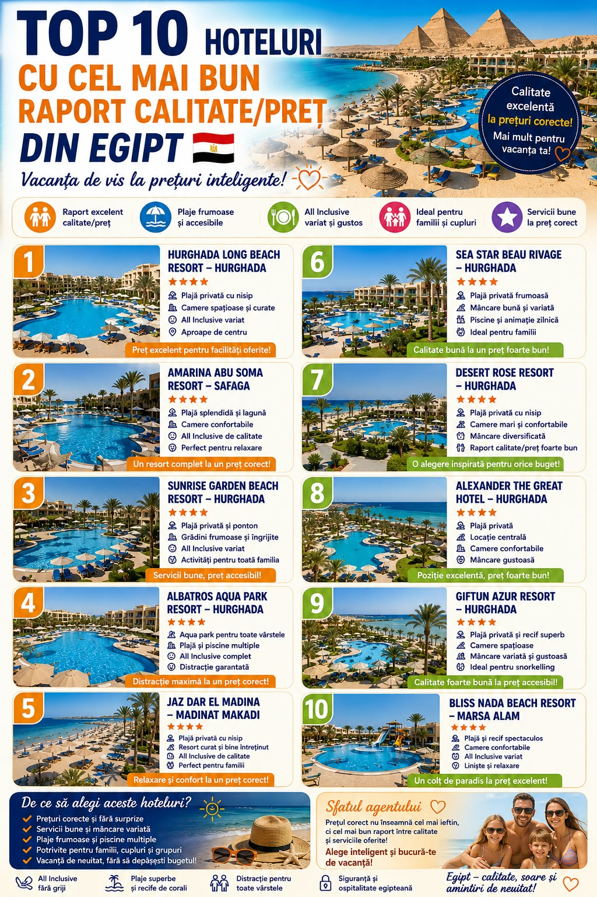
Prima linie la mare, hotel pe plajă sau plajă privată?
Par același lucru? Nu sunt. „Prima linie” garantează că vezi marea din cameră? „Beachfront” înseamnă că ai șezlongul inclus? Iar „plajă privată” înseamnă nisip fin și intrare lină pentru cel mic? Este una dintre confuziile pe care le întâlnesc cel mai des atunci când alegem un hotel.
🌊 Prima linie la mare
Ce înseamnă
Hotelul e foarte aproape de mare, în prima linie de construcții.
Ce nu înseamnă automat
- Că toate camerele au vedere la mare
- Că hotelul are plajă privată
🏨 Hotel pe plajă
BeachfrontCe înseamnă
Hotelul e amplasat direct la plajă sau are acces foarte facil către ea. Între clădire și mare pot exista grădini, piscine, alei sau promenada resortului.
Ce nu înseamnă automat
- Că și camera ta are Sea View
⛱️ Plajă privată
Private beachCe înseamnă
Hotelul dispune de o zonă de plajă destinată oaspeților săi.
Ce verificăm
- Nisip, pietriș sau recif?
- Intrare lină în mare sau ponton?
- Șezlongurile și umbrelele sunt incluse?
- Cât de departe e, efectiv, plaja de cameră?
„Vedere la mare” și „hotel pe plajă” sunt două lucruri diferite
Poți avea un hotel excelent pe plajă, dar camera rezervată să aibă vedere la grădină, la piscină sau lateral spre mare. Tipul de vedere apare în denumirea camerei, așa că merită citit înainte de rezervare. Mai multe despre asta la tipurile de cameră.
„Vreau hotel pe plajă.” Ce înseamnă asta pentru tine?
Când un client îmi spune asta, prefer să mai pun câteva întrebări, pentru că fiecare înțelege altceva:
Pe scurt
Vacanța potrivită nu se alege doar după fotografia hotelului, ci după detalii. Spune-mi destinația, perioada, configurația familiei și ce e cel mai important pentru tine, iar eu te ajut să alegi hotelul potrivit.
📞 Sună-mă: 0759 012 119✉️ Solicită oferta
🏖️ Vezi și topurile cu plajă privată din Nisipurile de Aur, Sunny Beach, Albena și Albania.
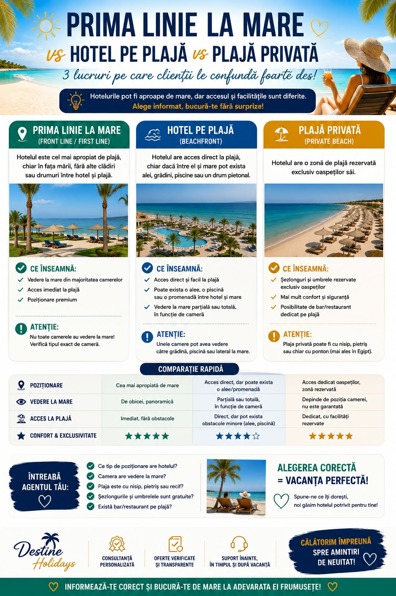
Spune-mi 4 lucruri și îți găsesc vacanța potrivită
Compar variantele pentru tine, explic diferențele care nu se văd în stele și preț, și rămân alături de tine pe toată durata vacanței.